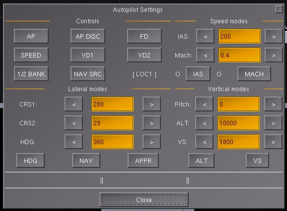

The CRJ700 features a mostly realistic autopilot system. All the modes work, except backcourse ("B/C") mode, because I have no idea how to begin to implement that.
Tip: You can find a list of autopilot shortcut keys in the aircraft help inside the simulator.
The CRJ700's autopilot system can be divided into two parts (not including the yaw dampers and flight director, which are discussed below): the autopilot and autothrottle. The autopilot controls the aircraft's pitch and roll with separate lateral modes and vertical modes.
Lateral modes:
Vertical modes:
When the autopilot is first engaged, the basic lateral and vertical modes are activated. Pressing a button to engage any other mode in a category will disable the respective basic mode. Pressing that same button again will cause the autopilot to revert to the basic mode. For example, if the pilot engages the autopilot, it would first be flying in basic vertical mode. If he pushed the altitude hold button, the autopilot would fly altitude hold mode. If he presses the altitude hold button again, the autopilot would revert back to basic vertical mode.
* - Basic lateral mode holds the heading the plane was at when the mode was first activated; however, if the airplane is banked more than 5 degrees in either direction, this mode will hold the bank angle instead of the heading.
** - Approach mode is a combined lateral and vertical mode. Pressing the approach button will deactivate any other active lateral modes and track the glideslope, however, it will not deactivate the current vertical mode to follow the glideslope down until you revert to basic vertical mode first. For best results, engage only within range of the localizer and leave a vertical mode on until you've intercepted the glideslope.
*** - Basic vertical mode holds the pitch the plane was at when the mode was first activated. You can change that pitch in 0.5° increments using the vertical speed wheel.
The autothrottle controls the engines to fly at a set speed. The autothrottle has two modes, IAS and Mach. The autothrottle only takes effect when the thrust modes for each engine are set to normal.
The autopilot and autothrottle can be controlled using the MCP ("Mode Control Panel") or autopilot settings dialog.
| Control name | Function |
|---|---|
| CRS1 | Adjust the NAV1 course radial |
| FD | Turn the flight director on/off |
| AP ENG | Engage/disengage the autopilot |
| AP DISC | Disengage the autopilot |
| XFR | Not implemented |
| TURB | Not implemented |
| SPEED | Engage/disengage the autothrottle |
| SPEED knob | Adjust the target IAS or Mach speed (click face to switch between IAS/Mach modes) |
| APPR | Turn approach mode on/off |
| B/C | Not implemented |
| HDG | Turn heading hold mode on/off |
| HDG knob | Adjust the heading bug |
| CRS1 | Adjust the NAV1 course radial |
| NAV | Turn NAV mode on/off |
| 1/2 BANK | Switch bank angle limit between 30° (full) and 15° (half) |
| ALT | Turn altitude hold mode on/off |
| ALT knob | Adjust the altitude setting |
| VS | Turn vertical speed hold mode on/off |
| VS wheel | Adjust the vertical speed setting or pitch setting |
| CRS2 | Adjust the NAV2 course radial |

| Control name | Function |
|---|---|
| AP | Engage/disengage the autopilot |
| AP DISC | Disengage the autopilot |
| FD | Turn the flight director on/off |
| SPEED | Engage/disengage the autothrottle |
| YD1 | Turn yaw damper #1 on/off |
| YD2 | Turn yaw damper #2 on/off |
| 1/2 BANK | Switch bank angle limit between 30° (full) and 15° (half) |
| NAV SRC | Cycle NAV source (see "about nav mode" below) |
| IAS | Set autothrottle to IAS mode |
| MACH | Set autothrottle to Mach mode |
| HDG | Turn heading hold mode on/off |
| NAV | Turn NAV mode on/off |
| APPR | Turn approach mode on/off |
| ALT | Turn altitude hold mode on/off |
| VS | Turn vertical speed hold mode on/off |
When the autopilot is engaged, the current active modes will appear in the white spaces near the bottom.
The flight director is a pink horizon on the PFDs that alerts the pilot as to how the autopilot would fly the airplane if it were in command. To use it, turn on the flight director switch on the MCP or in the dialog and set the autopilot accordingly.
The yaw damper cushions out the Dutch roll effect using the rudder. The CRJ700 has 2 separate yaw damper systems which can be turned on and off using the buttons on the pedestal or in the dialog.
NAV mode has 3 different sources to follow:
In reality, "FMS2" is also included as an option- but there is only one GPS/Route Manager in FG.
NAV modes are switched using the knob on the side panel, the autopilot dialog, or the shortcut key F6. The current NAV mode is displayed on the PFD.
The real CRJ700 is not equipped with autoland, so do NOT expect the simulated CRJ700 to land itself with the autopilot. ;-)
Actually, the above statement is a lie. As of version 1.0.2, when the autopilot is left in NAV mode, it will actually land (sort of).